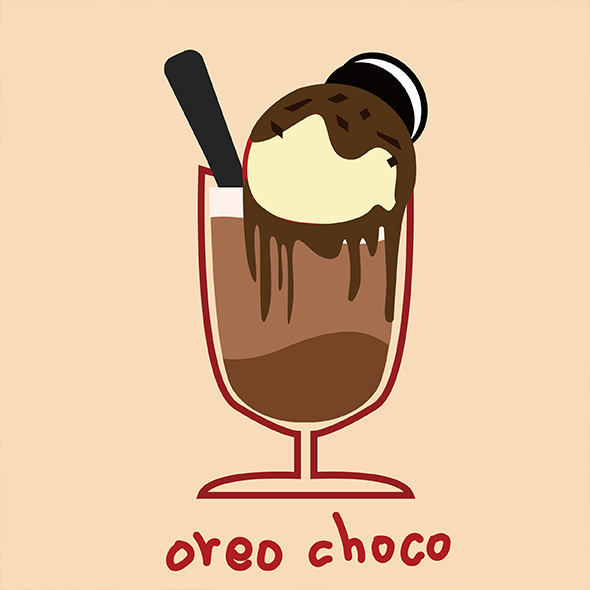

Oreo choco

Try making ‘오레오 초코’✨
⠀
1. 초코 파우더, 오레오, 우유, 얼음을 넣고 갈아요
2. 그 위에 바닐라 아이스크림을 한 스쿱 얹어요
3. 개인 취향에 맞게 토핑으로 오레오, 초코시럽,
생크림, 잘게 자른 다크 초콜릿을 뿌려요
4. 먹어요:)
⠀
1. 초코 파우더, 오레오, 우유, 얼음을 넣고 갈아요
2. 그 위에 바닐라 아이스크림을 한 스쿱 얹어요
3. 개인 취향에 맞게 토핑으로 오레오, 초코시럽,
생크림, 잘게 자른 다크 초콜릿을 뿌려요
4. 먹어요:)